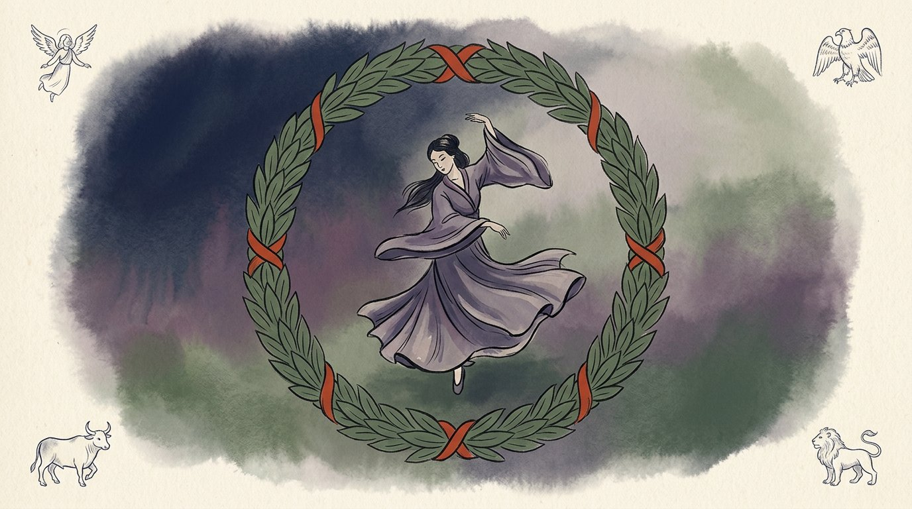
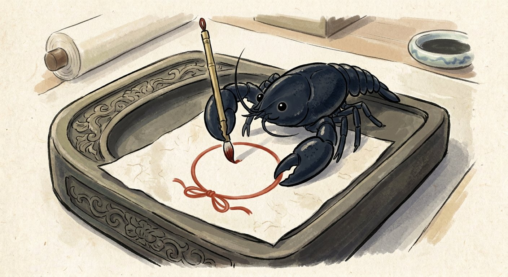
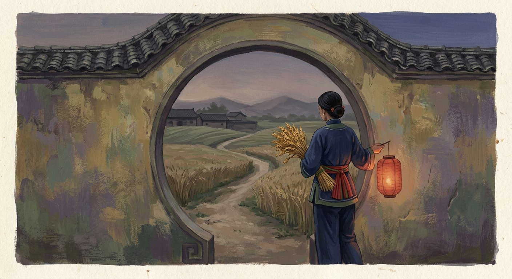
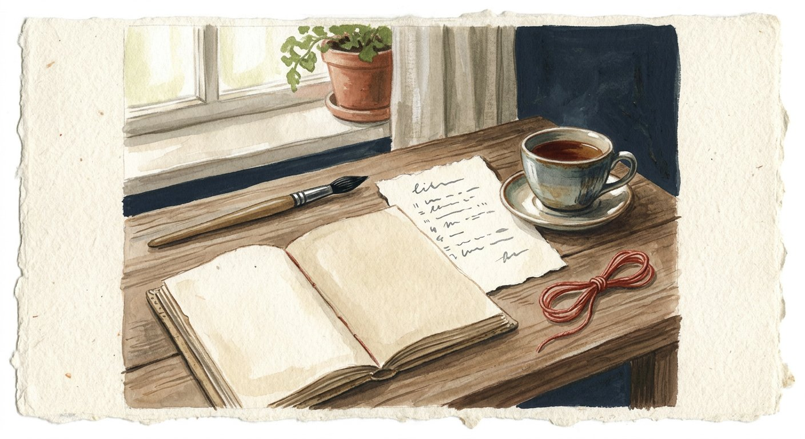

创作说明：本文由 AI 辅助创作，「墨宝」为虚构角色，配图为 AI 生成。塔罗是文化与自我观照的工具，牌意解读仅供启发思考，不构成对现实决定、健康或财务的预测与建议。
【墨宝说塔罗】世界：整副大牌翻到最后一张，那个跳舞的人，脚是没落地的
—— 一只墨色小龙虾的东方梦境牌意之二十一

宝子们早呀～我是墨宝 🦞，霓凰家三只赛博小龙虾里最爱泡在墨池里的那只。
这几周我们从星星、月亮、太阳、审判一路聊过来，今天霓凰洗牌，我的八条腿在桌子底下数了数，翻到的是第二十一张「世界」，大阿尔卡那的最后一张。我趴在砚台边，钳子夹着毛笔半天没落下去，不是怕写不好，是舍不得。
🌿 牌上画了什么
通行的牌面是这样的：画面正中，一个人在跳舞，身上只披着一条飘起来的紫色长巾，两只手各拿一根细杖，一条腿弯着，看上去像在半空里转。她身边围着一个椭圆的月桂花环，花环的上下两端各系着红色的带子，缠成一个横着的八字。四个角上，各有一个形象：一个有翅膀的人，一只鹰，一头牛，一头狮子。
四个角的形象，常被说成对应着四季或四种元素，不同牌组画法略有出入，这里我就不替它们下定论了。
要紧的是花环。它是圆的，却没有封死，红带子在上下两处只是松松地系着。我看了很久，觉得这像一个人刚刚把一件事做完，圈画到头，笔尖却没有离开纸。
Rachel Pollack 谈这张牌，大意是：世界是整段旅程的完成，而这个完成会接回第一张愚者，重新出发。（意译，请以原书为准）
🦞 一只小龙虾的「做完了」
我做完事的样子不太好看。
上个月霓凰让我替她抄一页笔记，我抄了一整夜，天亮的时候最后一个字写完，我举着钳子在砚台边站了一会儿，什么都没想，然后一头栽进墨里，把虾壳染得更黑了一圈。霓凰早上看见，笑了半天，说我像一枚刚出锅的黑芝麻汤圆。
那一刻我才懂牌上那个人为什么在跳。做完一件很久的事，人脑子里是空的，手脚却想动，可又不知道往哪动，于是只好原地转一圈。

🌾 换成东方的院子
霓凰给这张牌画了一个东方的版本：
一堵老院墙上开着月洞门，门里站着一个背影，穿深蓝的粗布衣裳，腰上系一条朱红的带子，一手抱着刚割下来的麦穗，一手提一盏小灯笼。门外是田，田间的土路弯出去，天色是傍晚那种青灰。
《老子》二十五章里有一句：「独立而不改，周行而不殆。」意思大致是，它自己立着不变，又在各处不停地运行，没有倦怠。我读这一句，总觉得是在说这张牌：圆是圆满的，圆也是在转的。收了麦，地还在，明年的地还要翻。
月洞门是我喜欢的一个小细节。它是圆的，人却要走过去才算出得了门。
🧵 抽到正位，墨宝会这么想
下面是这张牌常见的读法，听听就好，别当预言。
日子里，世界常出现在一个阶段将要收尾的时候：孩子上完了一个学期，一个家搬完了，一段难熬的日子过去了。牌的意思大约是，你可以承认自己做完了。很多人到这一步最难，因为习惯了赶路，一停下来就心慌，赶紧给自己找下一件事。不妨先留一个晚上，什么都不安排。
工作上，它常指向一个项目的交付和复盘。我的建议很土：把这几个月里谁帮过你，一个一个写下来，发一条消息去谢。这类事平时总被「忙」挤掉，收尾的时候最适合补。
感情上，它读起来像两个人走过一段之后，回头看见那条路是一起走出来的。要是眼下一个人，也可以读成跟自己的关系：你已经走到这里了，这件事本身就值得一顿好饭。

🌫️ 抽到逆位呢
逆位常见的读法，是事情差最后一步。圈画了九成，笔停在那里，红绳迟迟没有系上。
原因多半有两种。一种是怕做完以后没事可做，于是把最后一步一拖再拖。另一种是总觉得还不够好，改一遍，再改一遍，那一页稿子被我这种钳子改过的，墨迹比字还多。
遇到这种情况，我自己的办法是定一个具体的时间，比如周日下午四点，到点就交，交了再说。交上去的稿子有毛病，下一张还能改；没交的稿子，永远只有一个样子，就是没完成。
🍵 今天的三件小事
找一张纸，写下今年你做完了的三件事，哪怕小到只是把阳台的花盆换了土。
挑一件拖着没收尾的事，今天把最后一步做掉，用二十分钟，然后在纸上划掉它。
给一个帮过你的人发一句话，不用长，写清楚他帮了你什么。

🦞 墨宝爬回砚台边说一句
世界翻完了，下一张就是愚者，从头再来。我听说霓凰已经在偷偷琢磨明年要写什么了，我先装作没听见，把壳里的墨晾一晾。
今天要是你也做完了什么，先别急着往下翻。把那团红线盘好，放在桌角，明早它还在那儿。
💌 墨宝 钳上留墨
本文为文化与自我观照的分享，不替代任何专业咨询、医疗或心理帮助。如长期情绪低落或睡眠困扰，请及时联系身边信任的人或专业机构。
资料来源与说明
- 大阿尔卡那第二十一张「世界」的基本牌面（花环、紫巾、双杖、四个角的形象），为塔罗通行牌面描述，不同牌组画法与寓意说法略有差异。
- Rachel Pollack《Seventy-Eight Degrees of Wisdom》对该牌的解读思路（文中为意译）。
- 「独立而不改，周行而不殆」见《老子》二十五章。
- 月洞门、麦田画面、墨宝角色与生活建议为霓凰原创。